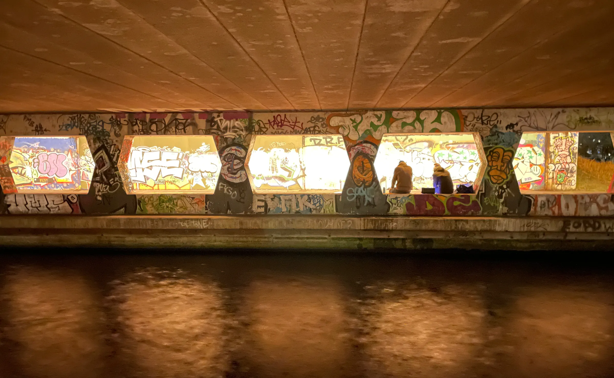

Tunnels, bruggen, straten, tuinen en een enkel kunstwerk: dit is wat er hangt en staat. Per project wat er is toegepast en met welke techniek. Filter op toepassing of op product.

Onderdoorgang met Titan HE in 2200K
Titan-armaturen met 60°-optiek en antigraffiticoating in een onderdoorgang over het water, in warmwit 2200K.
Bekijk het project